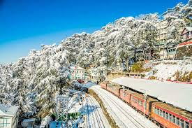
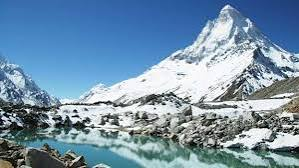
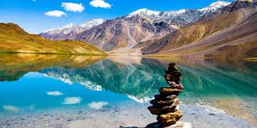

Major Cities and Urban Centers
Shimla

- The Ridge
- Mall Road
- Jakhoo Temple
- Christ Church
- Viceregal Lodge
- Kufri
- Annandale
- Summer Hill
Manali
- Solang Valley
- Rohtang Pass
- Hadimba Temple
- Old Manali
- Manu Temple
- Vashisht Hot Springs
- Naggar Castle
Dharamshala
- McLeod Ganj
- Dalai Lama Temple Complex
- Bhagsu Waterfall
- Triund Trek
- Namgyal Monastery
- HPCA Stadium
Kullu

- Raghunath Temple
- Bijli Mahadev Temple
- Great Himalayan National Park
- Manikaran Sahib
- Kasol
Dalhousie
- Khajjiar (Mini Switzerland of India)
- Dainkund Peak
- Kalatop Wildlife Sanctuary
- St. John’s Church
Hill Stations
Natural Attractions and Adventure
Spiti Valley

- Key Monastery
- Tabo Monastery
- Chandratal Lake
- Pin Valley National Park
- Dhankar Monastery